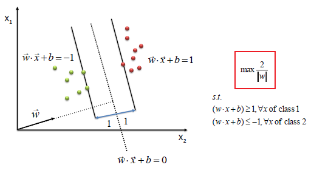

Data Mining > Support Vector Machine > Theory
Theory
What is Support Vector Machine?
A Support Vector Machine (SVM) is a supervised machine learning algorithm that can be
employed for both classification and regression purposes.
It performs classification by finding the hyperplane that maximizes the margin between the
two classes. The vectors (cases) that define the hyperplane are the support vectors.
Svm is of two types:-
- Linear svm - The data is linearly separable.
- Non-linear svm - The data is not linearly separable.
What is a hyperplane?
Hyperplane can be think of decision boundaries that classify data points into their
respective classes in a n-dimensional space. Data points falling on either side of the
hyperplane can be attributed to different classes.
It is a generalization of a plane,in n-dimension it is called a hyperplane.

What is margin?
Margin is defined as a distance between the support vectors and the hyperplane.
The
main task of (SVM) to maximize the margin between support vectors as shown below:
 
What are Support vectors?
Support vectors are the points that are close to hyperplane.These points helps to find the
hyperplane which helps to maximize the margin. These points are the heart of SVM without
these points SVM can't be implemented. It's the most difficult task to find these points. As
support vectors changes, hyperplane also changes.